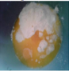
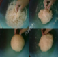
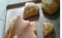

Resep Kue Maryam
Bahan-bahan:

- 250 gr tepung terigu
- 1 butir telur
- 3 sdm margarin, lelehkan
- 1/2 sdt garam
- margarin leleh untuk olesan
- minyak untuk meredam
langkah-langkah
- Campur semua bahan menjadi satu

- Uleni sampai kalis(menggunakan tangan)jangan takut jika adonannya lengket ya, lumuri tangan sesekali
dengan tepung(tapi jangan menambahkan tepung)uleni terus sampai adonan kalis

- Kalisnya adonan canai tidak sekalis adonan roti ya, kira kira seperti ini sudah cukup.
